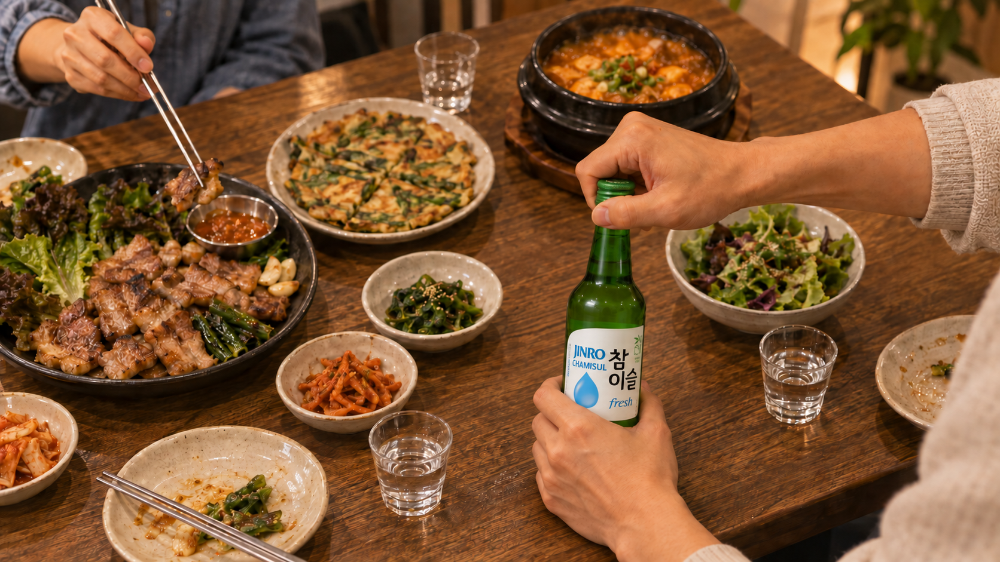
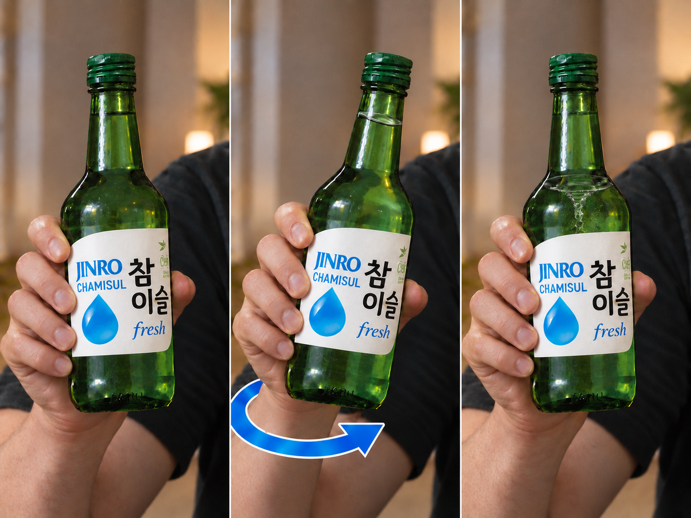
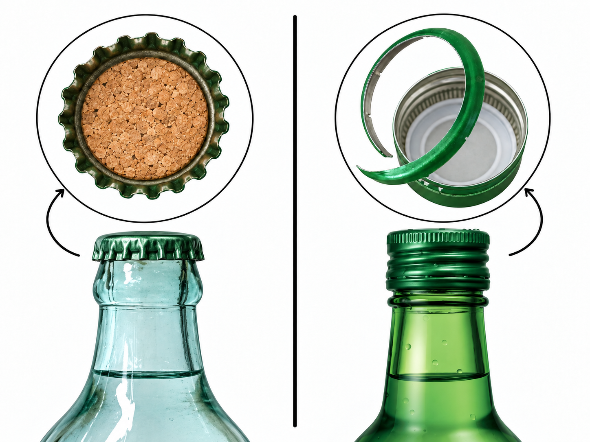
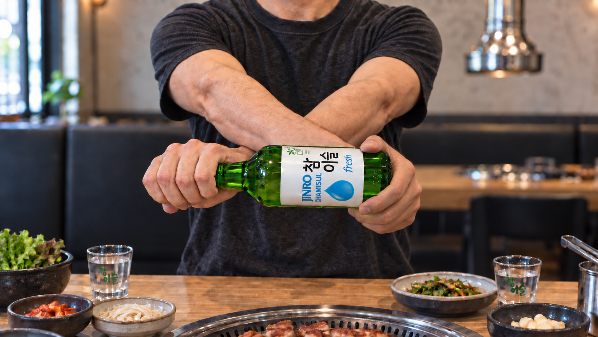
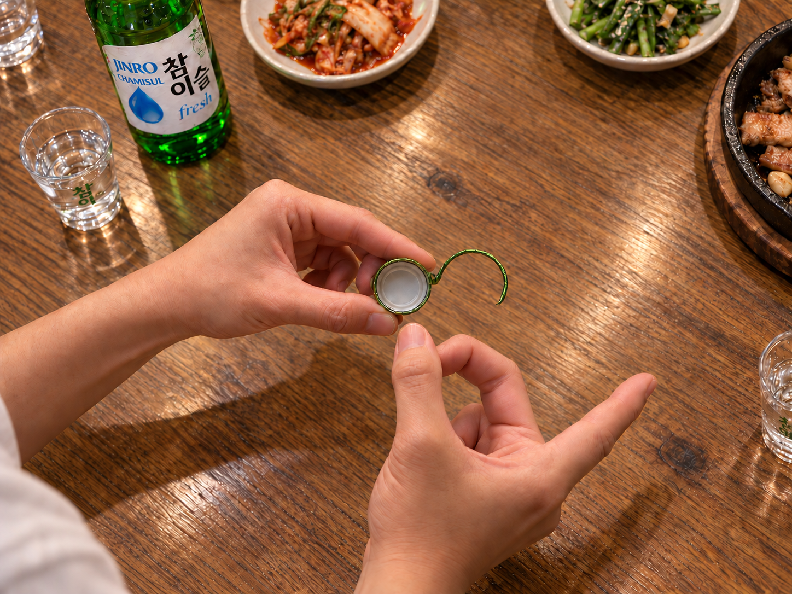

POV：韓式聚餐，輪到你開 JINRO 了
從瓶中漩渦到瓶蓋彈指遊戲，一起看看韓國聚會上那些好玩的開瓶小動作。
開瓶燒酒，為什麼能變成一個「小時刻」？
一瓶 JINRO 上桌，有人輕輕一晃，瓶裡竟然出現一個小漩渦。「欸，你是怎麼做到的？」朋友忍不住問。平凡的一個瞬間，瞬間成了全場焦點。
燒酒是韓國的代表酒款之一，通常會搭配美食一起享用。在某些聚會上，光是開瓶就自帶小表演：有人秀一手漩渦，有人在旁邊看戲，也有人照平常的方式直接開蓋。
開瓶方式人人不同。這裡整理了幾種你可能在韓國餐桌上遇到的招式，還有開完瓶後偶爾會登場的小遊戲。

先說在前頭：這些通通都不是必做
最簡單的方法，還是照平常那樣：轉開瓶蓋、倒酒就好。搖一搖或拍一拍瓶身都不是必要動作，也不會讓酒變得更好喝。
接下來介紹的，是你在部分韓國聚會上可能看到的「選配」開瓶方式，並不是要你從頭到尾照著做的固定流程。如果想試試看，請務必握穩瓶身，並確認周圍有足夠的空間。要是覺得瓶身太滑或手感不舒服，就照平常的方式開吧。
招式 1：在瓶中轉出一個小漩渦
液體轉呀轉，中間浮現一個小漩渦。雖然只維持一下下，但已經夠吸睛了。
握穩未開封的瓶子，用手腕做出小幅、可控的動作，讓液體轉起來。動作要小而穩，別大力或大幅度地甩瓶子。
重點在於漩渦本身的視覺效果，並不會改變酒的味道。看別人轉出漩渦、聊聊手腕怎麼施力，就能讓平凡的開瓶變成大家一起共享的小時刻。

招式 2：輕輕拍一下瓶底
開瓶前，你也可能看到有人用手掌輕拍瓶底。有些人是轉完漩渦再拍，也有人直接跳過轉瓶這一步。
有一種說法是，搖瓶和拍瓶最早是為了把掉進酒裡的軟木塞碎屑弄掉。確切的起源沒有明確記載，不過現在拍瓶只是一種因人而異的開瓶習慣。
現代的燒酒瓶其實不需要這個動作。如果想試試看，請握穩瓶身，只用手掌輕輕拍一下瓶底就好。

招式 3：換個手勢握瓶
同一瓶酒，不同握法。
有些人會雙手交叉，一手握瓶、一手握蓋，讓平常的轉蓋動作多了點出其不意的視覺效果。差別就在握法：一手穩住瓶身，另一手轉開瓶蓋。
看起來比實際上還難，好玩的地方就在這裡。如果交叉雙手覺得彆扭，或是讓瓶子不好握，就用你習慣的握法吧。

開瓶之後：瓶蓋遊戲
瓶子打開了，不代表瓶蓋的任務就結束。在某些聚會上，它還會變身成一個短短的小遊戲。
玩家把瓶蓋邊緣留下的那圈小金屬條扭成長長的尾巴，再輪流用手指彈它。每一桌都可以自訂規則：把金屬條彈飛的人，可能要回答一個問題，或是決定下一道菜。
樂趣很單純：就是緊盯著看輪到誰的時候金屬條會被彈掉。那短短的懸念就能帶來幾聲歡笑，而且完全不用罰酒。
金屬邊緣可能很鋒利，請小心拿取瓶蓋。玩的時候要遠離食物和杯子。金屬條一脫落就立刻停手，並馬上把掉落的金屬片從桌上清走。不想參加的人，也可以放心說一聲「pass」。

一瓶酒，百種開法
看到漩渦，或是好奇對方的手到底怎麼動的，都能自然而然聊起來。這些小動作與其說是禮儀規範，更像是在日常裡找點小樂趣。
下次和朋友吃韓式料理配 JINRO 時，不妨留意一下大家怎麼開瓶。有些招式你可能眼熟，有些或許是第一次見。比起親自上場，看別人玩更有趣，也完全沒問題。
不管用什麼方式開瓶，最重要的是讓每個人都能自在享受這一餐。
想看更多 JINRO 的故事與韓國餐桌文化，歡迎追蹤 JINRO Global 官方 Instagram、Facebook 和 YouTube。
本文僅供已達法定飲酒年齡的讀者閱讀。請理性、適量享用 JINRO，切勿酒後駕車。